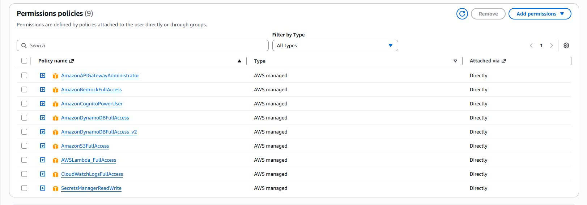
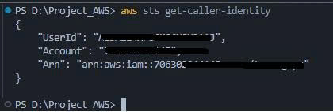
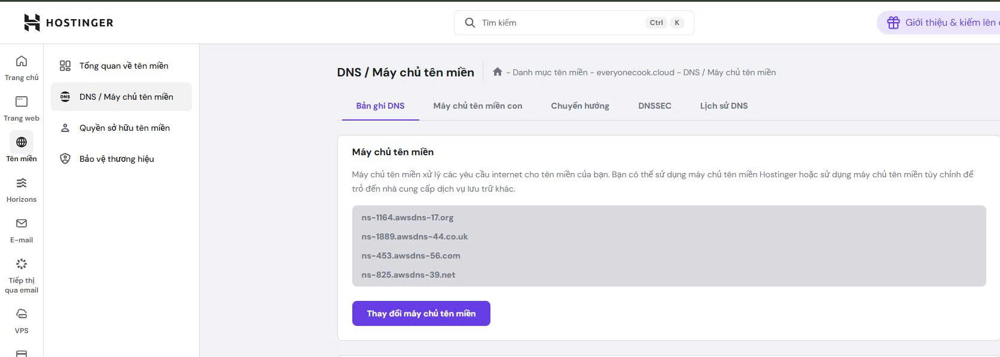
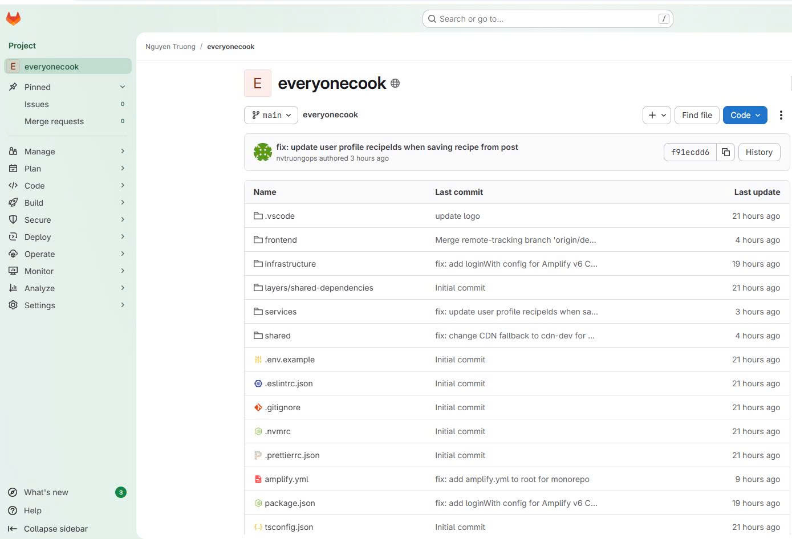

Setup Environment
Overview
In this step, you will install all the necessary tools to develop and deploy the EveryoneCook application.
Required Tools
1. Node.js 20.x
# Download from https://nodejs.org/
# Or use nvm (recommended)
nvm install 20
nvm use 20
# Verify installation
node --version # Should be v20.x
npm --version
 Screenshot: Terminal showing Node.js 20.x installed
Screenshot: Terminal showing Node.js 20.x installed
2. AWS CLI v2
# Windows: Download from https://aws.amazon.com/cli/
# macOS: brew install awscli
# Linux:
curl "https://awscli.amazonaws.com/awscli-exe-linux-x86_64.zip" -o "awscliv2.zip"
unzip awscliv2.zip
sudo ./aws/install
# Verify installation
aws --version
 Screenshot: Terminal showing AWS CLI v2 installed
Screenshot: Terminal showing AWS CLI v2 installed
3. AWS CDK CLI
# Install CDK globally
npm install -g aws-cdk
# Verify installation
cdk --version
 Screenshot: Terminal showing CDK CLI installed
Screenshot: Terminal showing CDK CLI installed
4. Git
# Download from https://git-scm.com/
# Or use package manager
# Verify installation
git --version

5. Code Editor
Recommended: Visual Studio Code with extensions:
- AWS Toolkit
- GitLab Workflow
- ESLint
- Prettier
AWS Account Setup
1. Create AWS Account
If you don’t have an AWS account:
- Go to https://aws.amazon.com/
- Click “Create an AWS Account”
- Follow the registration process
- Add payment method
2. Create IAM User
For security, don’t use root account
- Go to IAM Console → Users → Create user
- Create user and save credentials
 Screenshot: IAM console showing user created with AdministratorAccess
3. Configure AWS CLI
# Configure AWS credentials
aws configure
# Enter:
# AWS Access Key ID: [Your Access Key]
# AWS Secret Access Key: [Your Secret Key]
# Default region name: us-east-1
# Default output format: json
 Screenshot: Terminal showing aws configure completed
Screenshot: Terminal showing aws configure completed
4. Verify AWS Access
# Test AWS credentials
aws sts get-caller-identity
# Should return your account ID and user ARN

Domain Setup (Optional)
If you want to use a custom domain:
1. Register Domain
Buy domain name on hpanel.hostinger
Route 53 creates dns record to hostinger
For this workshop, we use: everyonecook.cloud


2. Note Domain Registrar
You’ll need access to domain registrar to update nameservers later.
GitLab Setup
Create GitLab Repo
 Screenshot: GitLab showing personal access token created
3. Configure Git
# Set your name and email
git config --global user.name "Your Name"
git config --global user.email "your.email@example.com"
# Verify configuration
git config --list
Project Setup
1. Clone or Create Project
Option A: Clone existing project
git clone https://gitlab.com/your-username/everyonecook.git
cd everyonecook
Option B: Create new project
mkdir everyonecook
cd everyonecook
git init
2. Install Dependencies
# Install all dependencies
npm install
# This installs:
# - Infrastructure dependencies (CDK)
# - Backend dependencies (Lambda modules)
# - Shared dependencies
3. Copy Environment Variables
# Copy example env file
cp .env.example .env
# Edit .env with your values
# Key variables:
# - AWS_REGION=us-east-1
# - AWS_ACCOUNT_ID=your-account-id
# - DOMAIN_NAME=everyonecook.cloud
# - GITLAB_TOKEN=your-gitlab-token
Verification
Check that everything is installed correctly:
# Check Node.js
node --version # v20.x
# Check npm
npm --version # 10.x
# Check AWS CLI
aws --version # aws-cli/2.x
# Check CDK
cdk --version # 2.x
# Check Git
git --version # 2.x
# Check AWS credentials
aws sts get-caller-identity
# Check project dependencies
npm list --depth=0
Troubleshooting
Issue: Node.js version mismatch
# Use nvm to switch versions
nvm install 20
nvm use 20
Issue: AWS CLI not found
- Restart terminal after installation
- Check PATH environment variable
Issue: CDK command not found
# Reinstall CDK globally
npm uninstall -g aws-cdk
npm install -g aws-cdk
Issue: AWS credentials invalid
# Reconfigure AWS CLI
aws configure
# Enter correct credentials
Next Steps
Once your environment is set up, proceed to CDK Bootstrap to prepare your AWS account for CDK deployments.